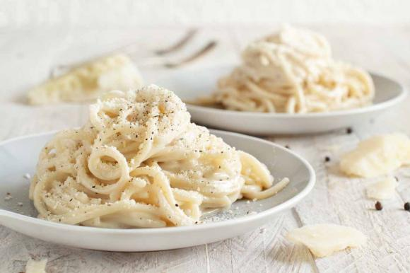

Cacio e pepe

Description
Cacio e pepe is a pasta dish from the cuisine of the city of Rome. Cacio e pepe means "cheese and pepper" in several central Italian dialects.
In keeping with its name, the dish contains grated Pecorino Romano cheese and black pepper, together with spaghetti, or traditionally tonnarelli.
Ingredients
- 1 teaspoon salt
- 1 pound bucatini (dry)
- 2 cups finely grated Pecorino Romano cheese
- 1 1⁄2 tablespoons freshly ground black pepper, or more to taste
Steps
- Bring a large pot of water to a boil and add salt. Cook bucatini in the boiling water, stirring occasionally,
until tender yet firm to the bite, 8 to 10 minutes.
- Place grated Pecorino Romano cheese into a large glass bowl and mix with a fork to make sure the cheese contains no lumps.
- Once the bucatini are al dente,
lift them out with a spaghetti fork or tongs and put them directly into the bowl with the cheese. Do not allow the water to drain too much.
- Add one ladle of pasta water to the bowl. Stir the bucatini around until a cream has formed.
Add more pasta water, little by little, until a thick cream has formed. Sprinkle freshly ground pepper over the pasta.
Toss and serve immediately.